Channel Rack
Piano Roll — select a synth channel ADSRCutoffRes
Click empty cell: add note · click note: delete · drag right while adding: lengthen · Space / gamepad A: play/stop · D-pad: move step cursor · X: toggle step · LB/RB: channel

BEATMAKERClick empty cell: add note · click note: delete · drag right while adding: lengthen · Space / gamepad A: play/stop · D-pad: move step cursor · X: toggle step · LB/RB: channel